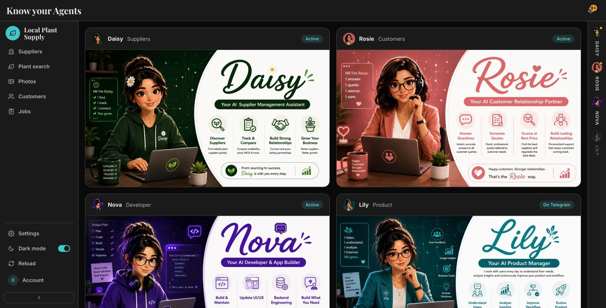

What LPS is and who uses it
Local Plant Supply (LPS) is a plant-sourcing business. Customers send it lists of plants they need, and LPS finds them at nurseries and growers, prices them, quotes them and orders them. This system is one shared workspace where the LPS team, its suppliers and four AI agents do that work together.
In short
Customers ask LPS for plants for a job. LPS turns each request into a Job, prices every plant on it, checks with a supplier that the plants are actually in stock, and places an Order with that supplier once the customer commits. By default every job is sourced from one wholesale supplier, Austin Plant Supply (APS), unless Chris names a different supplier for that job.
- Chris owns the business and makes every commercial decision. He is the admin in the app.
- Suppliers (nurseries and growers) say what they have in stock and confirm orders. Some have their own login to a supplier portal. Others get a one-off web link.
- Customers never log in. LPS talks to them by email and message, and nothing is sent to them without Chris's approval.
- Four AI agents do the routine work. Rosie runs jobs and orders, Daisy keeps the supplier and plant catalogue, Lily collects feedback, and Nova maintains the software.
Everyone works on the same records. When Rosie saves a job line, it appears on Chris's screen. When a supplier answers a question in the portal, Rosie is told and the job updates. When Chris drags a different option onto a line, the agents see that change too.
The business and the problems it solves
The value LPS adds is finding the right plant at the right size and price, quickly, and getting it to the customer's job on time. Until this system existed, that meant re-reading supplier emails and spreadsheets, matching plant names by hand, and tracking answers across many conversations.
The system was built around five connected problems:
| Problem | What it looked like | How the system addresses it |
|---|---|---|
| Fragmented supplier information | Availability and prices arrive as emails, spreadsheets, PDFs, photos and websites, each in a different format. | Daisy reads incoming supplier lists and loads them into one searchable plant catalogue, with each row linked to the file it came from. |
| Slow sourcing and quoting | Every request meant identifying the plant, reconciling names and sizes (common, botanical, cultivar), and finding a supported price. | Rosie turns a message, screenshot or plan into job lines and prices them from the APS price list. Plant search understands aliases, botanical names, cultivars and typos. |
| Coordination gaps | Partial quantities, substitutions and commitments got lost between messages and records. | Each supplier question is a tracked Availability Request that the supplier answers line by line. Each commitment is a tracked Order with its own status. |
| Commercial and disclosure errors | A listed price could be mistaken for confirmed stock. Internal notes or customer details could reach the wrong person. | Price lists are treated as indicative only. Notes are split by audience (for the customer, internal, for and from the supplier). Customer details reach a supplier only when that is switched on. |
| Repeated operational friction | The same complaints came up again and again with no path to a fix. | Lily records feedback and writes requirements. Nova builds approved screen changes. The other agents update their own procedures when Chris gives explicit feedback. |
The agents' clock (including Daisy's 9 AM daily summary) and the times shown in a job's change history use the America/Chicago time zone.
Sources: casestudy.md ("Situation", "Task"), harness/agents/rosie/system_prompts/1-agent.md ("Facts vs permission"), app/lib/orders.ts (isApsSupplier), harness/harness.json (timezone), app/components/workspace/job-request.tsx (changeStamp)
The people who use it
The same website serves three kinds of human visitor, and each sees something different.
| Who | What they do | How they reach the system |
|---|---|---|
| Chris and the LPS admin team | Own the business. Approve every send, selection, order and closure. Edit jobs directly, drag supplier options onto job lines, and chat with the agents. | Sign in with role admin. They see the full workspace on desktop or phone, and can install it as an app. |
| LPS Partners (suppliers with a login) | Answer Availability Requests line by line, submit them, acknowledge orders, set a fulfillment date, mark orders ready, and chat with LPS. | Sign in with role partner. They see only their own company's supplier portal, covering every branch of that company. |
| Other suppliers (no login) | Answer one Availability Request, or view one order. | A public link that Rosie emails after Chris approves. The link opens that one item only, with no navigation, chat or catalogue. |
| Customers | Ask for plants, receive quotes, commit to orders. | They never sign in. LPS keeps a customer record and a conversation thread for each one, and contacts them by email or message once Chris has approved the exact text. |
| The human developer | Owns database and business-workflow changes, and harness restarts. | Works in the code repository and talks to the agents. Lily stages database and workflow requirements for the developer. |
How roles are enforced
Passwords are checked by Supabase Auth. On success the app issues its own signed, HTTP-only session cookie (app_sid, 14 days) that carries the role (admin or partner) and, for partners, the supplier company id. The app-wide gate in app/proxy.ts sends a partner who opens any non-portal page back to /partner/<their id>. A partner who tries another company's id gets not found, so they can't even tell that company exists.
Admin accounts are created only by an operator running app/scripts/create-admin.mjs on the server. Partner logins are created by an admin in the supplier's Portal access tab. The generated password is shown once and must be changed at first sign-in. A supplier is an LPS Partner exactly while it has at least one portal login. That flag is derived by the database, not set by hand. See Auth, roles and security.
Sources: app/proxy.ts, app/lib/session.ts, app/lib/auth.ts, app/lib/partner-auth.ts, app/scripts/create-admin.mjs, docs/app/README.md ("Auth", "Portal access", "Public availability requests"), harness/agents/rosie/system_prompts/1-agent.md ("What needs Chris's yes")
The four agents
The agents are AI assistants that run on the LPS server. Each has one area of responsibility, its own written procedures, and its own ways of being reached.
Rosie: sales and orders
Turns customer requests into jobs, prices them, prepares Availability Requests, writes quotes, creates orders once the customer commits, and handles job-related customer and supplier messages.
Daisy: suppliers and catalogue
Finds and onboards suppliers, reads the lists they email in, keeps plant names, sizes, prices, aliases and photos tidy, and posts a 9 AM daily summary.
Lily: feedback and requirements
Records what Chris says about how the business and the app work, and turns repeated pain points into written requirements. She is reached on Telegram only.
Nova: the developer agent
Changes the app and the agents' tools and keeps the docs current. Requested app changes normally go live the same day, and screen changes first pass a screenshot review. Harness changes wait for the human operator to restart it.

/agents) has one card per agent. Daisy, Rosie and Nova show Active, while Lily shows On Telegram because she has no app chat.The team can reach Rosie, Daisy and Nova in the chat panel inside the app. All four are also on Telegram. Rosie and Daisy each have an LPS email mailbox. Suppliers reach Rosie through the chat in their portal, where she appears as "Local Plant Supply".
| Agent | App chat panel | Telegram | Supplier portal chat | Reads/writes business data | |
|---|---|---|---|---|---|
| Rosie | Yes | Yes | Yes (sends; inbox not polled) | Yes | Yes |
| Daisy | Yes | Yes | Yes (inbox checked every 5 min) | No | Yes |
| Lily | No (shown as "On Telegram") | Yes | No | No | No |
| Nova | Yes | Yes | No | No | No (works on code) |
The agents hand work to each other with internal messages. For example, Daisy forwards an order email that landed in her mailbox to Rosie, Lily sends an approved screen change to Nova, and any agent sends a code request to Nova. The full picture is on Meet the agents, and the technical setup is on Agents (technical).
Sources: app/lib/agents.ts (AGENTS, CHAT_AGENTS), harness/agents/*/agent.json, harness/agents/*/system_prompts/1-agent.md, harness/agents/*/plugins/gws/config.json (pollIntervalSec), harness/plugins/gws/index.ts
How a job moves, in one minute
Every customer request that needs more than a price answer becomes a Job, shown as JR-<number>. A Job moves through four sales stages:
- Quote. Every new job starts here. Rosie records the lines and prices each one from the APS price list. A "quick quote" stops at this stage.
- Availability. With Chris's OK, LPS sends the supplier an Availability Request (AR). The supplier answers each line: Available, Partial Qty, Unavailable, Diff Sz/Sub (a substitute), Can Order or Arriving Soon. The job enters this stage when an AR is actually delivered.
- Committed. When the customer commits, LPS creates a supplier Order and the job becomes Committed. The order then has its own path: New → Processing → Order Ready, as the supplier acknowledges it with a fulfillment date and marks it ready, and finally Closed Won or Closed Lost.
- Won or Lost. A job is closed only on Chris's explicit word. Silence is not a lost sale. Closing a job's last order on his word closes the job too, but only when all of its demand is known and fully ordered.
| Job stage | Stored value | Set by |
|---|---|---|
| Quote | quoted | Default for every new job |
| Availability | availability | An AR actually delivered to the supplier |
| Committed | committed | Order creation (never set by hand) |
| Won | closed_won | Chris's explicit word |
| Lost | closed_lost | Chris's explicit word |
Stages don't have to run in order. A customer who commits straight away gets a direct order with no AR, and a quick quote never needs one. The full story, with every branch, is on Quote to order, end to end. Every status vocabulary is on Status lifecycles.
Sources: app/lib/job-requests.ts (REQUEST_STATUSES, ACTIVE_JOB_STATUSES), app/lib/orders.ts (ORDER_STATUSES), harness/agents/rosie/skills/agent/job-requests/SKILL.md, harness/agents/rosie/skills/agent/job-requests/artifacts/lifecycle.md
The main screens
The app works on desktop and phone (it switches layout below 900 px wide) and can be installed like an app. The admin workspace has five destinations in its menu, plus Settings, the agent chat and a notifications bell.
For the LPS team (admin)
| Screen | Address | What it's for |
|---|---|---|
| Suppliers | /suppliers, /suppliers/<id> | Every supplier company (multi-site companies appear once), its locations, contacts, price-list sources, Availability Requests and portal logins. See Suppliers, plants and catalogue. |
| Plant search | /plants | Search the whole plant catalogue by common, botanical or cultivar name, size and location. |
| Photos | /photos | The reference plant photo library that Daisy catalogues. |
| Customers | /customers, /customers/<id> | Customer records and their active jobs. There is deliberately no "new customer" form, because Rosie finds or creates customers from requests. |
| Jobs (All jobs) | /requests | The list of every job, 25 per page. It shows Availability and Committed jobs by default (Quote jobs need the Status filter). See Jobs and job lines. |
| Focused job page | /jobs?jr=<id> | One job with an Active Jobs sidebar. Tabs: Request items (the lines), Orders, and one tab per supplier AR. Rosie's chat for that job opens alongside. New job request also starts here. |
| Settings | /settings | AI model connection, app accent colour, and one tab per agent (model, Google account, scheduled tasks, chat look). |
| Know your Agents | /agents | One card per agent, reached from the Account menu (desktop) or More (phone). |
| Agent chat | Side panel (full screen on phone) | Conversations with Rosie, Daisy and Nova, organised by subject. Rosie has a general Main thread plus one per job, customer and supplier company. Daisy has one per supplier company. Nova has a single thread. See Chat and live updates. |
![The All jobs list in the LPS app, dark mode, with Status and Item status filters active. Each job is a row card with a status pill (Availability or Committed), a JR number and job name, a delivery date or a dashed Set date button, a Pickup or Delivery tag, an item count and a subtotal. A footer shows filtered totals for items and subtotal. On the right, the chat panel is open on Rosie's thread for one job, with tabs for Rosie, the job's customer and its supplier, and a message box reading Ask Rosie.](screenshots/all-jobs-with-chat.jpg)
/requests) with the agent chat panel open beside it. Each card shows the job's stage, its JR number, date, Pickup or Delivery, item count and subtotal. The chat tabs switch between Rosie and the job's customer and supplier conversations.For suppliers
| Screen | Address | What it's for |
|---|---|---|
| Availability Requests | /partner/<id> | Requests waiting to be answered, viewed by request, by item or by status, with New, Processing and Completed filters. |
| Request page | /partner/<id>/requests/<arId> | Answer each line, add a note, print a sheet, and press Submit. |
| Orders | /partner/<id>/orders | Acknowledge new orders with a fulfillment date, then mark them ready. |
| Order/Request History, Settings, Chat | /partner/<id>/closed-orders, …/settings | Closed items, password change, and chat with Local Plant Supply. |
| Public links (no login) | /public/availability/<token>, /public/orders/<token> | One AR to answer, or one order to view read-only. |
Admins can open Supplier view from the Account menu to see any partner's portal as the supplier sees it. Every route is listed on Frontend: routes and components.
Sources: app/components/workspace/shell.tsx (NAV, AccountRailActions, NotificationBell), app/components/workspace/partner.tsx, app/app/requests/page.tsx (DEFAULT_STATUSES), app/lib/job-request-queries.ts (JOB_REQUEST_PAGE_SIZE), app/app/jobs/page.tsx, app/components/workspace/job-request.tsx, app/components/workspace/settings/, app/app/suppliers/[id]/page.tsx, app/app/partner/[id]/, app/app/public/
How humans and agents share one workspace
There is no separate "agent system" and "human system". There is one set of business records in one database, and both people and agents work on them.
- One set of records. Jobs, job lines, supplier options ("candidates"), Availability Requests, orders, customers, suppliers and the plant catalogue all live in one database. When Rosie saves a job, it is a real row that Chris can open and edit straight away. Agent output is editable business data, not a chat reply someone has to copy.
- Screens update themselves. When anyone changes a record (Chris in the app, a supplier in the portal, or an agent), every open screen is told something changed and reloads what it shows. Nobody has to refresh.
- Supplier actions wake Rosie. When a supplier submits an AR, acknowledges an order, marks it ready, or changes a date or note, the app sends Rosie a notification on that supplier's conversation. Saving answers without pressing Submit doesn't count and doesn't wake her.
- Conversations follow the business. Each job has its own chat thread (
jr-<id>), and so does each customer and each supplier company. Rosie's work on JR-42 stays in JR-42's thread. Chat messages carry the page the sender had open, and agent replies can link straight to a job thread or open an AR. - Direct editing or conversation, your choice. Chris can type a change into a table cell, drag a supplier option onto a line, or ask Rosie to do it. Both paths write to the same records and obey the same rules.
- Every change is recorded. Each new or edited job or job line goes into the job's change history, which says who made it: This app (a person in the app), Rosie, or An agent script (a database write that did not name itself).
Ground rules that apply everywhere
| Rule | What it means in practice |
|---|---|
| Chris approves outbound messages | Agents draft an email or supplier question, and Chris approves that exact draft before it goes. Standing exceptions include order-change notices and routine portal clarifications. |
| Orders need real commitment | An order is created only for quantities the customer has committed to. Chris relaying the commitment counts. |
| Only Chris picks and closes | Agents may select an exact match, or an option Chris's own direction or standing price rules pick. Any other choice of supplier option, any deletion, and every Won/Lost closure needs Chris's word. |
| Only a submitted answer counts | A supplier's half-filled, unsubmitted AR is ignored until they press Submit. |
| Notes are split by audience | Note for customer can appear on quotes. Internal note never leaves LPS. Note for supplier and from supplier carry the supplier conversation. Quotes never name the supplier. |
| Never invent | Agents never make up names, prices, quantities, dates or stock. Unknown stays blank. |
| Nothing quietly disappears | Availability Requests are never deleted, only closed or returned to Draft. The database itself refuses to remove them, and deleting a job closes its ARs and keeps their history. The agents' SQL helper refuses DELETE, DROP, ALTER, TRUNCATE and similar statements, so the few deletions that exist go through specific database functions, which agents use only with explicit approval. |
How the sharing works under the hood
Writes. The app writes through its own server routes (/api/*) using a server-only Supabase client. Generic cell edits go through PATCH /api/rows, which only accepts fields on a server-side allowlist (WRITABLE / ENUMS in app/lib/queries.ts). Rosie and Daisy write with SQL and database functions (RPCs such as select_candidate, send_availability_request, create_order) through a guarded query helper. That helper allows SELECT, INSERT, UPDATE and CREATE FUNCTION/PROCEDURE, and blocks DELETE, DROP, ALTER, TRUNCATE and similar statements. Every Rosie write starts with SET app.actor TO 'rosie', so the job_request_changelog trigger can attribute it.
Live updates. The app server holds one Supabase Realtime subscription on the business tables (job_requests, job_request_items, availability_requests, candidates, orders, order_items, order_item_job_request_items, customers, suppliers) and on the chat threads table. It fans changes out to browsers over Server-Sent Events as data-free {"type":"jobs"} invalidations. Each browser groups the signals it receives within 200 ms and then re-fetches what it needs. Pages also re-read on a 60-second fallback poll and whenever the tab regains focus or the connection comes back, so a missed signal is caught up. See Chat and live updates.
Agent wake-ups. Supplier actions call Rosie's supplier-events webhook (POST /webhook/rosie/supplier-events/notify) on a best-effort basis, authenticated by a shared secret header. The event lands on the supplier's suppliers.rosie_thread_id, or falls back to main. The availability_updated (save-only) event is acknowledged but never delivered. Because the database already holds everything, a missed notification loses no data. See Harness plugins.
Chat. The chat panel talks to each agent's webchat plugin through an admin-only proxy (/api/chat/<agent>/*). Transcripts live in the Supabase threads and thread_messages tables. On a supplier's thread, the supplier sees only their own messages and the replies Rosie explicitly marks with --portal.
Sources: app/lib/chat-realtime.ts, app/lib/job-events.ts (JOB_REALTIME_TABLES), app/lib/use-job-updates.ts, app/components/workspace/job-request.tsx (ACTOR_LABEL), harness/agents/daisy/migrations/0127_ar_publish_and_retention.sql, app/lib/notify-supplier-events.ts, harness/plugins/supplier-events/index.ts, harness/plugins/webchat/index.ts, harness/agents/rosie/scripts/agent/supabase/query, app/lib/queries.ts, docs/supabase-schema.md
The system at a glance
Behind the screens there are three main pieces: the web app that people use, the database that holds every business record, and the harness, the server program that runs the four agents. The agents reach the outside world (Telegram, Gmail, the app's chat) through plug-in connectors.
| Piece | In plain words | Built with |
|---|---|---|
| Web app | The website and installable app for the team, suppliers and public links. It also hosts this handbook. | Next.js 16, React 19, TypeScript, Tailwind CSS 4, the "Local Plant Supply UI" design system |
| Database and files | The single source of truth for suppliers, plants, photos, customers, jobs, ARs, orders, logins and chat transcripts. | Supabase: PostgreSQL with database functions, Realtime, object storage and Auth |
| Agent harness | Runs the four agents, each with its own instructions, skills, memory and conversation threads. | CogniSphere harness 0.12.0, OpenAI Codex models |
| Connectors | How the agents send and receive: chat, Telegram, Gmail, schedules, agent-to-agent messages, shareable pages, supplier events. | Harness plugins: webchat, telegram, gws, scheduler, agent-messaging, artifacts, supplier-events, admin |
| Server | One Linux machine runs the app and the harness as background services, behind an HTTPS front door. | nginx with Let's Encrypt certificates, systemd, optional S3 backups |
Ports, boundaries and secrets (names only)
- Processes. The app runs
next startonAPP_PORT(default 3000). The harness runscognisphere serveonHARNESS_PORT(default 3142), bound to 127.0.0.1. nginx is the only public entry point and proxies to both. See Deployment and operations. - App to harness. Every harness call from the app (settings, chat, artifacts) is server-side. Settings use an allowlisted pass-through,
app/api/harness/[...path], with a bearer secret (HARNESS_APP_SECRET). The browser never holds a harness or Supabase key, only its ownapp_sidcookie. - Gate.
app/proxy.tsrequires a session for every page and API, except/login,/api/auth/*, public AR and order links with a UUID token, public agent artifacts, and any path with a file extension. That last exception is why this handbook at/docs/*.htmlis readable without signing in. - Agents and data. Rosie and Daisy have their own Supabase credentials (
SUPABASE_PROJECT_ID,SUPABASE_SECRET_KEY,SUPABASE_DB_PASSWORD,SUPABASE_URL). Lily has no database access. Nova works on code, not business data. The webchat plugin holds its own credentials (WEBCHAT_SUPABASE_URL,WEBCHAT_SUPABASE_SECRET_KEY) to store transcripts. - Schema history. The database's numbered migrations (0001 onwards) live in
harness/agents/daisy/migrations/. They are the record for the whole shared database, not just Daisy. See Database schema.
For the full component view, see Architecture and the harness architecture diagram.
Sources: casestudy.md ("High-level technical architecture"), app/package.json, harness/harness.json, harness/package.json, scripts/setup-server.sh, app/proxy.ts, app/next.config.ts, harness/agents/*/agent.json
Where to go next
Pick the path that matches what you need.
If you run the business or work jobs
Quote to order, end to end
The whole journey of a customer request, with every branch and approval.
Jobs and job lines
Lines, candidates, selection by drag, notes and the change history.
Availability requests
Drafts, publishing, supplier answers, substitutes and submission.
Supplier orders
Creating orders, quantity allocations, confirmation and fulfillment dates.
Meet the agents
What Rosie, Daisy, Lily and Nova do, and what each needs your yes for.
Glossary
JR, AR, candidate, Diff Sz/Sub, EDD and every other term.
If you are a supplier or work with suppliers
Supplier portal and public links
How partners and link holders answer requests and confirm orders.
Suppliers, plants and catalogue
Companies and farms, price lists, plant search and photos.
If you build or run the system
Architecture
Components, boundaries and data flow.
API reference
Every app endpoint, who can call it, and what it returns.
Database schema
Tables, functions, triggers and migrations.
Agents (technical)
Prompts, skills, plugins and configuration per agent.
Deployment and operations
Server setup, deploys, backups and accounts.
Auth, roles and security
Sign-in, sessions, the gate and public links.
Or return to the LPS Handbook home.